Protótipos do Portal do Egresso — comparação
ADR 0009, decisão 10. Três direções, três telas, dados das personas fictícias. Avalie pelo celular primeiro (decisão 2). Clique no nome da direção para abrir o HTML e redimensionar a janela; clique na captura para vê-la inteira.
Medidas automáticas em Chrome headless (medir.py): a fonte a 200% é simulada
na raiz da página; a contagem de caracteres por linha é estimativa. A faixa cinza
"Protótipo" é descontada em todas as medidas; nas medidas de desktop, a faixa de
demonstração também é descontada, como manda a ADR.
Página pública
| Critério (ADR 0009) | Direção A — institucional | Direção B — trajetória | Combinação (A + B) |
|---|---|---|---|
| Sem rolagem horizontal, 320–1440 px, fonte 100% e 200% | ✓ nenhuma | ✓ nenhuma | ✓ nenhuma |
| 375×812: título sem rolar | ✓ h1 termina em 236 px | ✓ h1 termina em 236 px | ✓ h1 termina em 236 px |
| 1280x720: proposta e ação de entrar sem rolar (descontadas as faixas) | ✓ h1 256 px; entrar 404 px | ✓ h1 394 px; entrar 543 px | ✓ h1 358 px; entrar 507 px |
| 1440x900: proposta e ação de entrar sem rolar (descontadas as faixas) | ✓ h1 256 px; entrar 404 px | ✓ h1 394 px; entrar 543 px | ✓ h1 358 px; entrar 507 px |
| Área de conteúdo ≥ 1000 px entre 1280 e 1440 | ✓ 1088 e 1088 px | ✓ 1088 e 1088 px | ✓ 1088 e 1088 px |
| Um h1 por página | ✓ 1 | ✓ 1 | ✓ 1 |
| Alvos de ação ≥ 44 px | ✓ 0 abaixo de 44 px | ✓ 0 abaixo de 44 px | ✓ 0 abaixo de 44 px |
| Linha de texto ≤ ~75 caracteres (estimativa) | ✓ ~72 | ✓ ~72 | ✓ ~72 |
375x812 px
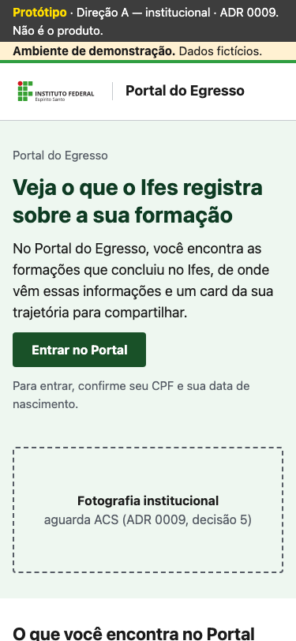
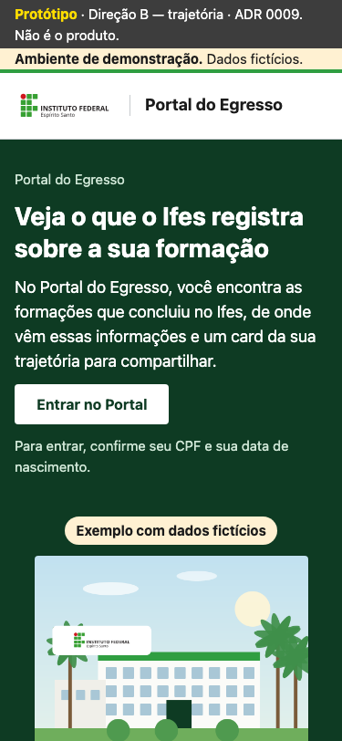
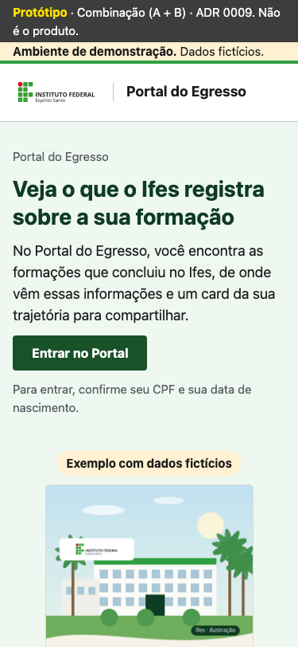
375 px

1280x720 px
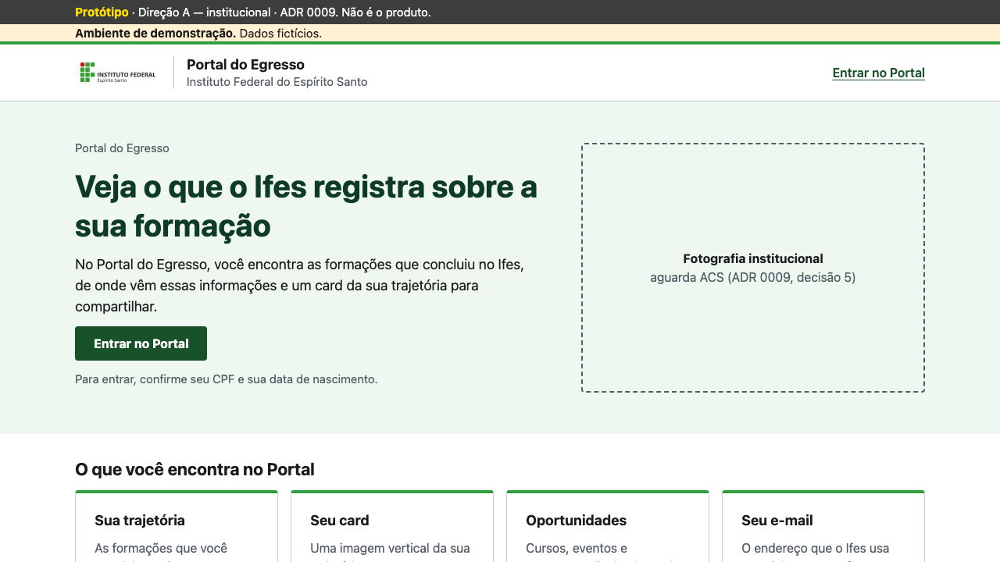
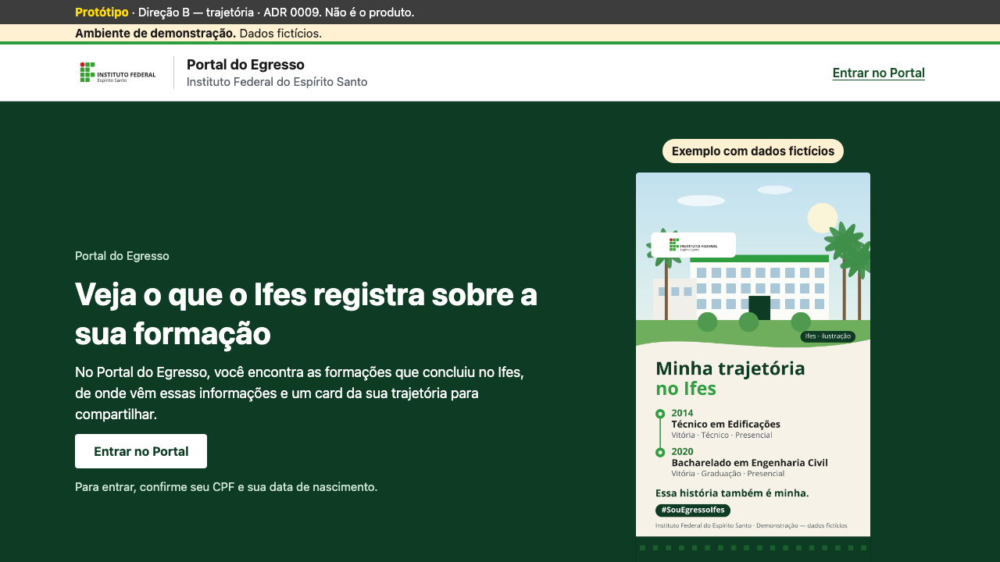
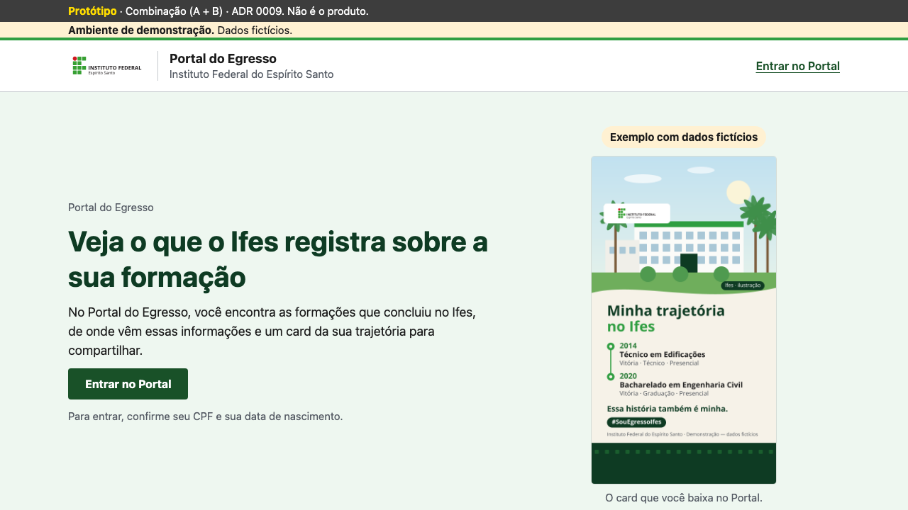
1024 px

1440 px

Início — Ana (1 formação)
| Critério (ADR 0009) | Direção A — institucional | Direção B — trajetória | Combinação (A + B) |
|---|---|---|---|
| Sem rolagem horizontal, 320–1440 px, fonte 100% e 200% | ✓ nenhuma | ✓ nenhuma | ✓ nenhuma |
| 375×812: título e primeiro fato sem rolar | ✓ fato termina em 662 px | ✓ fato termina em 528 px | ✓ fato termina em 492 px |
| 1280x720: título, primeiro fato e card ou ação (descontadas as faixas) | ✓ fato 607 px; card/ação começa em 704 px | ✗ fato 343 px; card/ação começa em 731 px | ✓ fato 353 px; card/ação começa em 637 px |
| 1440x900: título, primeiro fato e card ou ação (descontadas as faixas) | ✓ fato 607 px; card/ação começa em 704 px | ✓ fato 343 px; card/ação começa em 731 px | ✓ fato 353 px; card/ação começa em 637 px |
| Duas colunas a partir de 1024 px; uma no celular | ✓ 375: 1; 1024: 2; 1440: 2 | ✓ 375: 1; 1024: 2; 1440: 2 | ✓ 375: 1; 1024: 2; 1440: 2 |
| Área de conteúdo ≥ 1000 px entre 1280 e 1440 | ✓ 1088 e 1088 px | ✓ 1088 e 1088 px | ✓ 1088 e 1088 px |
| Um h1 por página | ✓ 1 | ✓ 1 | ✓ 1 |
| Alvos de ação ≥ 44 px | ✓ 0 abaixo de 44 px | ✓ 0 abaixo de 44 px | ✓ 0 abaixo de 44 px |
| Linha de texto ≤ ~75 caracteres (estimativa) | ✓ ~77 | ✓ ~77 | ✓ ~77 |
375x812 px
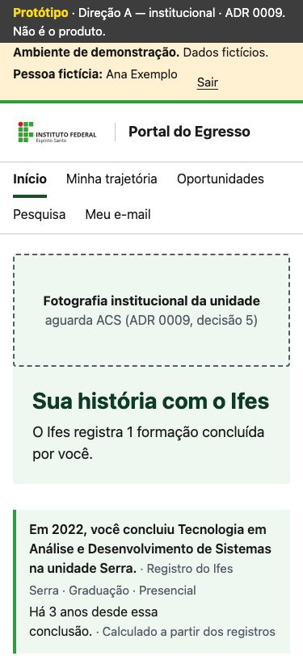
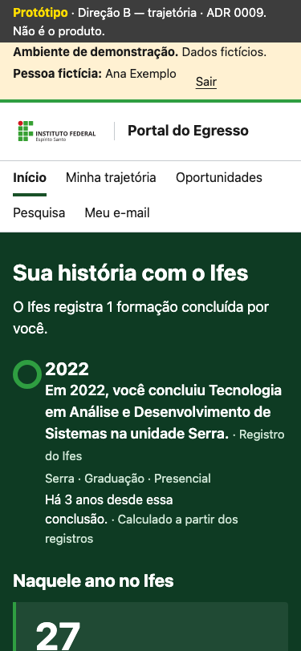
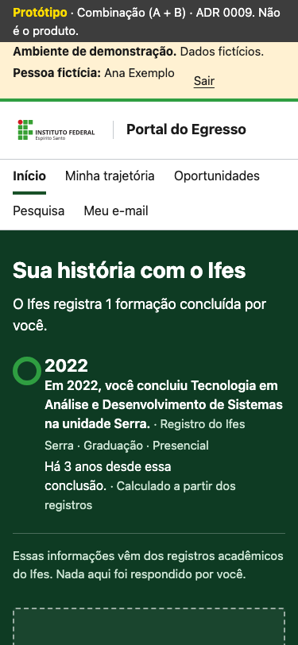
375 px

1280x720 px
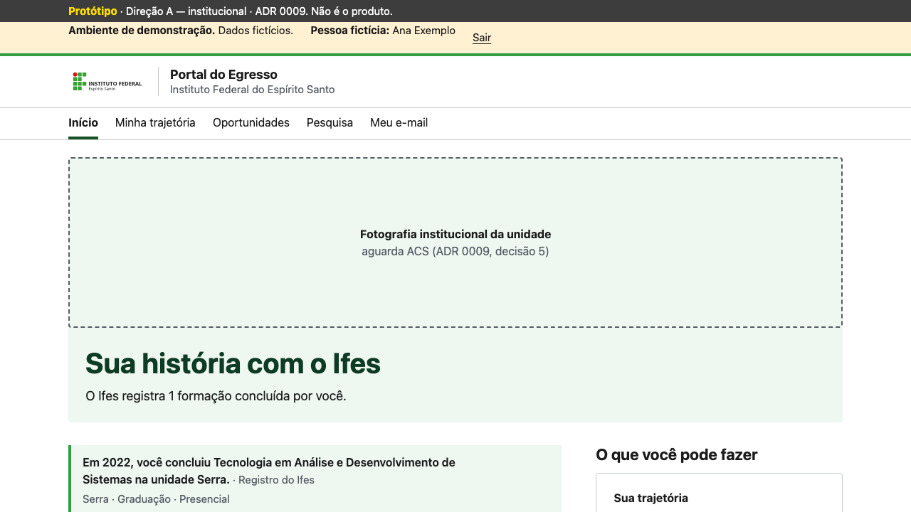
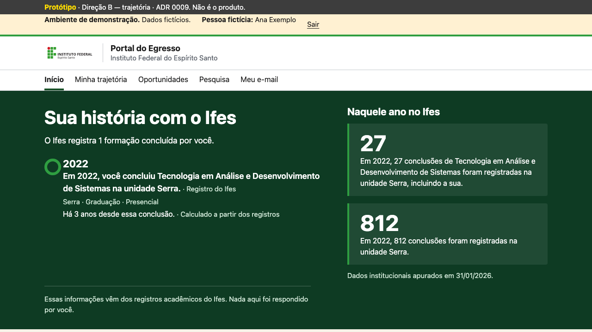
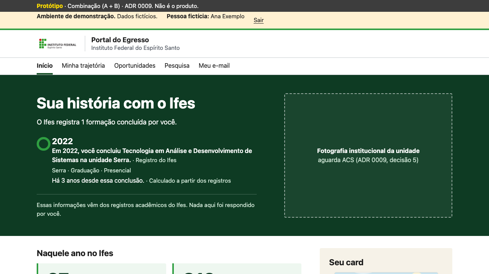
1024 px

1440 px

Início — Diego (3 formações)
| Critério (ADR 0009) | Direção A — institucional | Direção B — trajetória | Combinação (A + B) |
|---|---|---|---|
| Sem rolagem horizontal, 320–1440 px, fonte 100% e 200% | ✓ nenhuma | ✓ nenhuma | ✓ nenhuma |
| 375×812: título e primeiro fato sem rolar | ✓ fato termina em 662 px | ✓ fato termina em 501 px | ✓ fato termina em 492 px |
| 1280x720: título, primeiro fato e card ou ação (descontadas as faixas) | ✓ fato 607 px; card/ação começa em 704 px | ✓ fato 410 px; card/ação começa em 654 px | ✗ fato 353 px; card/ação começa em 843 px |
| 1440x900: título, primeiro fato e card ou ação (descontadas as faixas) | ✓ fato 607 px; card/ação começa em 704 px | ✓ fato 410 px; card/ação começa em 654 px | ✓ fato 353 px; card/ação começa em 843 px |
| Duas colunas a partir de 1024 px; uma no celular | ✓ 375: 1; 1024: 2; 1440: 2 | ✓ 375: 1; 1024: 2; 1440: 2 | ✓ 375: 1; 1024: 2; 1440: 2 |
| Área de conteúdo ≥ 1000 px entre 1280 e 1440 | ✓ 1088 e 1088 px | ✓ 1088 e 1088 px | ✓ 1088 e 1088 px |
| Um h1 por página | ✓ 1 | ✓ 1 | ✓ 1 |
| Alvos de ação ≥ 44 px | ✓ 0 abaixo de 44 px | ✓ 0 abaixo de 44 px | ✓ 0 abaixo de 44 px |
| Linha de texto ≤ ~75 caracteres (estimativa) | ✓ ~77 | ✓ ~77 | ✓ ~77 |
375x812 px
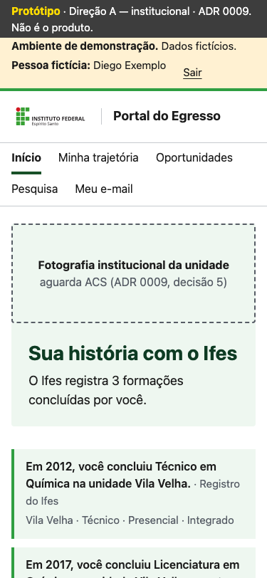
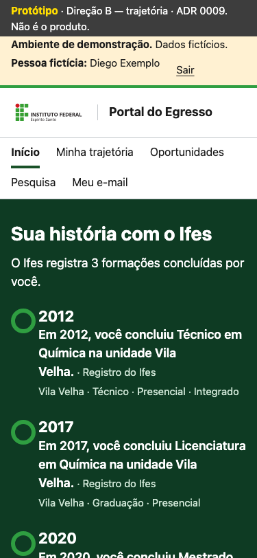
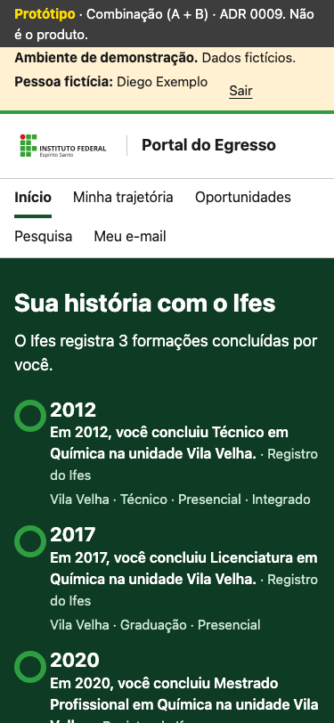
375 px

1280x720 px
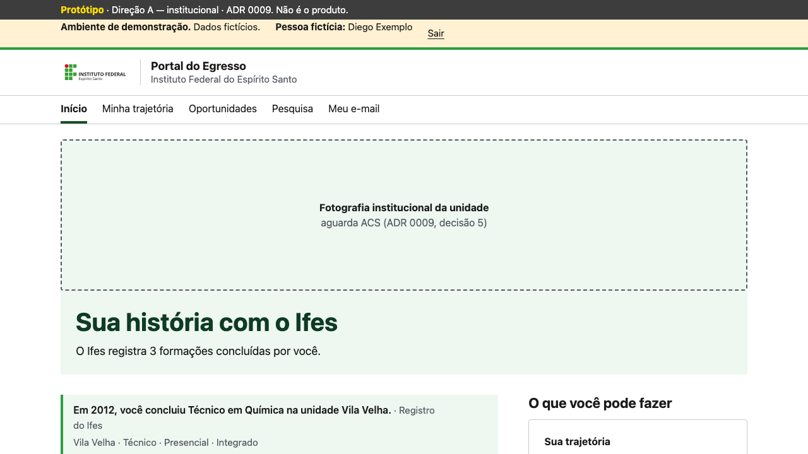
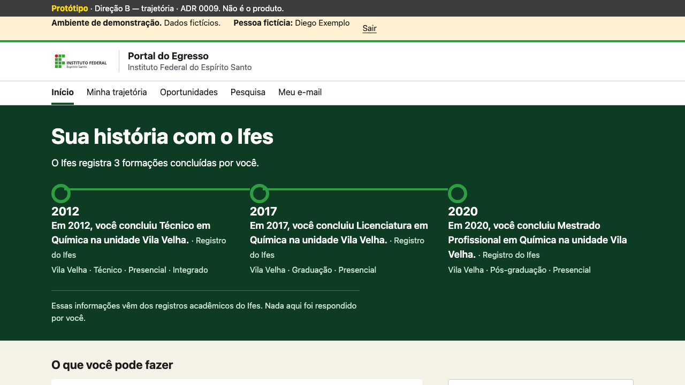
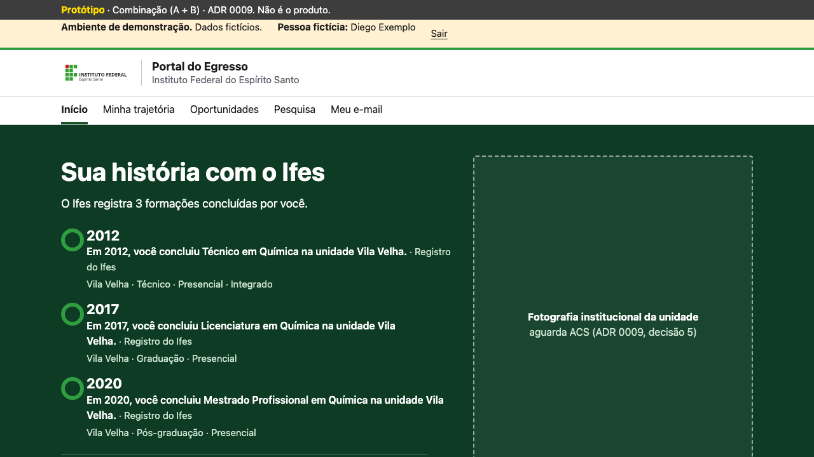
1024 px

1440 px


Contraste dos tokens novos (AA: 4,5:1)
| Par | Cores | Razão |
|---|---|---|
| Ação verde no branco | Aa #195128 sobre #ffffff | ✓ 9.3:1 |
| Branco no botão verde | Aa #ffffff sobre #195128 | ✓ 9.3:1 |
| Ação forte no branco | Aa #00420c sobre #ffffff | ✓ 11.8:1 |
| Branco na faixa profunda | Aa #ffffff sobre #0e3b23 | ✓ 12.6:1 |
| Texto secundário na faixa profunda | Aa #cfe6d6 sobre #0e3b23 | ✓ 9.6:1 |
| Texto no creme | Aa #1b1b1b sobre #f6f2e8 | ✓ 15.4:1 |
| Texto suave no creme | Aa #565c65 sobre #f6f2e8 | ✓ 6.0:1 |
| Ação verde no creme | Aa #195128 sobre #f6f2e8 | ✓ 8.4:1 |
| Texto suave no tonal | Aa #565c65 sobre #eef7f0 | ✓ 6.2:1 |
| Ação verde no tonal | Aa #195128 sobre #eef7f0 | ✓ 8.5:1 |
| Verde profundo no botão claro | Aa #0e3b23 sobre #ffffff | ✓ 12.6:1 |
Passagem do Portal para o instrumento (decisão 3)
À esquerda, o convite no Início do Diego (combinação) com a ação em verde. À direita, a primeira
tela da pesquisa (/formacoes/) na main 07b9cf9, depois da 025,
renderizada para o Diego com dados fictícios (na base da 025 ele tem pesquisa em andamento, por isso
"Continuar a pesquisa"), com a ação em azul (Direção B da 015, mantida no
instrumento até a D-02).
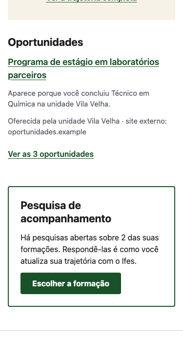
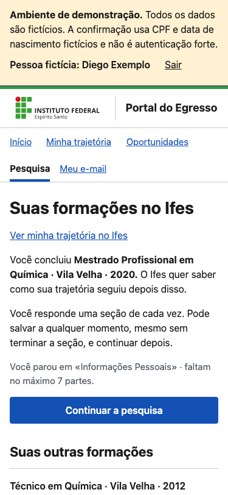